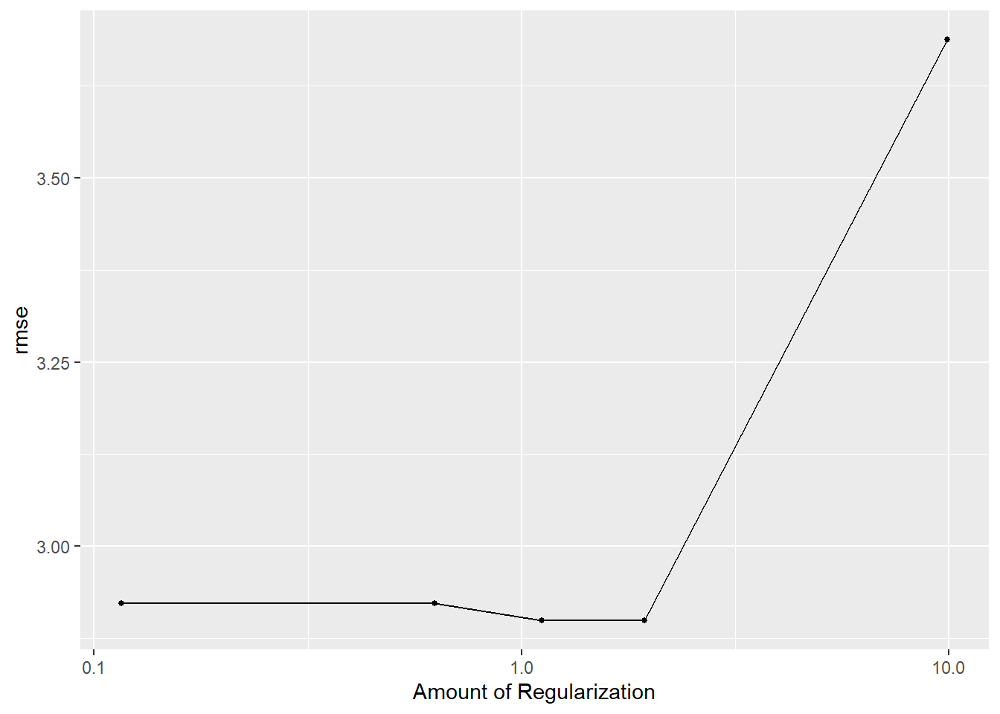
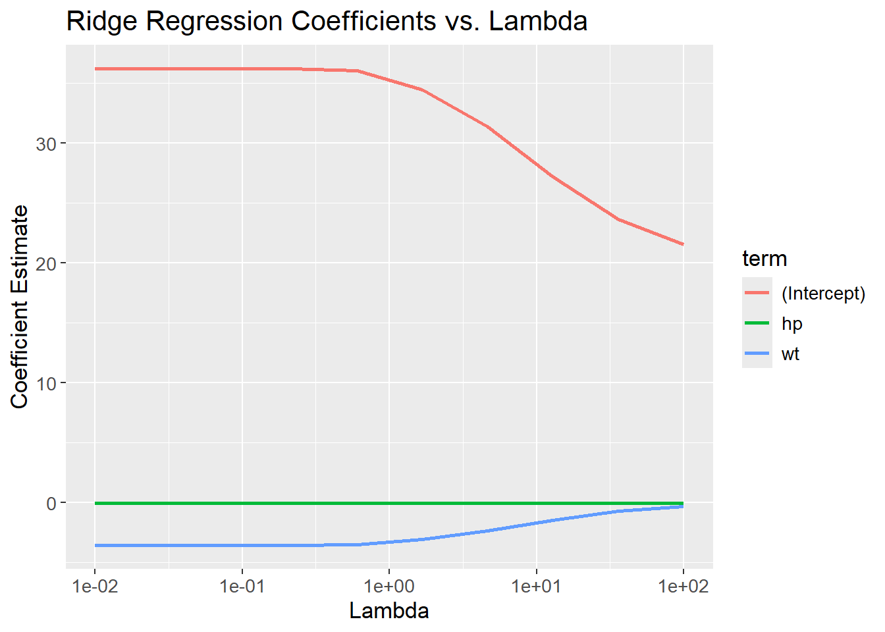

Show the code
set.seed(1337)
library("tidymodels")
tidymodels::tidymodels_prefer()
library("plotly")Set seed and load packages.
set.seed(1337)
library("tidymodels")
tidymodels::tidymodels_prefer()
library("plotly")Load data.
mtcars <- mtcars |>
as_tibble()Elastic Net is an extension of Ordinary Least Squares (OLS). It is a combination of Ridge and Lasso regression. Generally, Ridge is used to penalize large coefficients and Lasso is used to select coefficients. Elastic Net is a compromise between the two. These two methods are explained separately in the next two sections and lastly it is explained how they are combined in Elastic Net.
Recall from the OLS section that the goal is minimize the sum of squared residuals (SSR).
\[ \beta_{OLS} = \min_{\beta} ||y-X\beta||_{2}^{2} \]
Ridge is essentially OLS, except for an added penalty term to the minimization of the SSR:
\[ \beta_{Ridge} = \min_{\beta} ||y-X\beta||_{2}^{2} + \lambda||\beta||_{2}^{2} \]
Finding the coefficients for the linear model now becomes a compromise between minimizing the SSR and minimizing the size of the coefficients. \(\lambda\) is a hyperparameter that controls the trade-off between the two. When \(\lambda = 0\), Ridge regression is the same as OLS. When \(\lambda\) is very large, the coefficients are driven towards zero as the penalty term \(\lambda||\beta||_{2}^{2}\) becomes large compared to the residuals. The coefficients can never be set to zero, but they can be driven asymptotically close to zero. The reason is, when the coefficients are close to zero, the model prefer to fitting to the data instead of further reducing the size of the coefficients.
Introducing the penalty term makes the fit to the data worse, but it can improve the generalization to new data. The coefficients obtained through Ridge tends to be small compared to OLS, so the model tends to be less sensitive to changes in the data. In machine learning terms, this is called introducing bias (inability to fit data perfectly) to reduce variance (the model fits better to new data). The bias-variance trade-off is a fundamental concept in machine learning.
For visualization, remember the mtcars data set used previously. The following code chunk shows a 3D scatter plot of the weight of the car (wt) vs the horse power (hp) vs the miles per gallon (mpg). The color of the dots represent the horse power. When orienting the plot correctly, it is possible to see a linear correlation between the variables.
mtcars |>
plot_ly(x = ~wt,
y = ~hp,
z = ~mpg,
color = ~hp,
type = "scatter3d",
mode = "markers") |>
plotly::layout(
scene = list(
xaxis = list(title = "Weight"),
yaxis = list(title = "Horse Power"),
zaxis = list(title = "Miles per Gallon"),
camera = list(
eye = list(x = 1.5, y = -2, z = 0.5)
)),
showlegend = FALSE)Two coefficients are used to try and model the data. The coefficients are the slope of the line for the weight and horse power. High coefficients means steep slopes, which in turn suggests that the outcome (mpg) is sensitive to the variables (wt and hp). When presented to new data which is different from the training data, the model predicts wildly different outcomes due to the sensitivity to changes. The model then generalizes poorly to new data and is said to have high variance. By increasing lambda, the slope is reduced, and the model becomes less sensitive to the variables. This is the bias-variance trade-off in action as seen in the following code chunks.
# CV folds object
mtcars_split <- initial_split(mtcars)
mtcars_train <- training(mtcars_split)
mtcars_test <- testing(mtcars_split)
mtcars_folds <- vfold_cv(mtcars_train,
v = 5)
# Setup model specs
ridge_spec <- linear_reg(penalty = tune(),
mixture = 0) |>
set_engine(engine = "glmnet") |>
set_mode("regression")
OLS_spec <- linear_reg() |> # added OLS to have lambda = 0
set_engine(engine = "lm") |>
set_mode("regression")
# Model recipe, no preprocessing
ridge_recipe <- recipe(mpg ~ wt + hp,
data = mtcars_train)
# Combine to worflow
ridge_wflow <- workflow_set(
preproc = list(recipe = ridge_recipe),
models = list(OLS = OLS_spec,
Ridge = ridge_spec)
)
# Change values of hyperparameters to search across
ridge_params <- ridge_spec |>
extract_parameter_set_dials() |>
update(penalty = penalty(c(-1, 1)))
# Add params to workflow
ridge_wflow <-
ridge_wflow |>
option_add(id = "recipe_Ridge",
param_info = ridge_params) |>
option_add(id = "recipe_Ridge",
control = control_grid(extract = function(x) x))
# Run through grid
ridge_grid_results <- ridge_wflow |>
workflow_map(
seed = 1337,
resamples = mtcars_folds,
grid = 5
)The following code chunk shows the results of the grid search. The plot shows the root mean square error (RMSE) for the Ridge regression model against the different lambdas. The RMSE increases as lambda increases suggesting a low lambda is preferred.
autoplot(ridge_grid_results,
id = "recipe_Ridge",
metric = "rmse")
It is also possible to visualize the actual coefficients for the Ridge regression model. In the above, the lambda values were treated as hyperparameters and was optimized. If the goal is to visualize the coefficients for a specific lambda value, each value of lambda needs to be treated as its own model. The following code chunk shows how to do this.
# Define a grid of lambda values
lambda_grid <- 10^seq(-2, 2, length.out = 10)
# Create each function
ridge_models <- lambda_grid |>
map(function(lambda) {
linear_reg(penalty = lambda,
mixture = 0) |>
set_engine("glmnet") |>
fit(mpg ~ wt + hp,
data = mtcars)
})The coefficients are then plotted against the lambda values. The coefficients are reduced as lambda increases. The coefficients are not set to zero, but they are driven towards zero (and might visually appear to be zero).
# Unnest coefficients
ridge_coefficients <- bind_rows(map_dfr(ridge_models, ~tidy(.x))) %>%
mutate(lambda = rep(lambda_grid, each = 3))
# Visualize coefficients
ridge_coefficients |>
ggplot(aes(x = lambda,
y = estimate,
color = term)) +
geom_line() +
scale_x_log10() +
labs(title = "Ridge Regression Coefficients vs. Lambda",
x = "Lambda",
y = "Coefficient Estimate")
We can plot each of the fitted models on top of the scatterplot to see how the coefficients change with lambda. Due to the limitations of 3D-plotting with plotly, legends for each lambda value are not shown. The lambda values can instead be found be hovering each of the planes in the plot. It is seen, that the slopes are reduced as lambda increases.
# Make predictions for each function
ridge_predictions <- ridge_models |>
map2(lambda_grid, function(model, lambda) {
model |>
predict(mtcars) |>
bind_cols(lambda = lambda)
}) |>
bind_rows()
# Bind col predictions to data set
mtcars_train_w_pred <- mtcars |>
bind_cols(ridge_predictions |>
pivot_wider(names_from = "lambda",
values_from = .pred,
names_prefix = "lambda_",
values_fn = list) |>
unnest(everything())) |>
pivot_longer(cols = starts_with("lambda_"),
names_to = "lambda",
values_to = "prediction") |>
mutate(lambda = as.numeric(stringr::str_remove(lambda, "lambda_")),
lambda = round(lambda, 3))
# Create visualization
mtcars_3d_scatter <- mtcars |>
plot_ly(x = ~wt,
y = ~hp,
z = ~mpg,
color = ~hp,
type = "scatter3d",
mode = "markers")
plot_w_predictions <- mtcars |>
plot_ly(
x = ~ wt,
y = ~ hp,
z = ~ mpg,
type = "scatter3d",
mode = "markers"
) |>
plotly::layout(
scene = list(
xaxis = list(title = "Weight"),
yaxis = list(title = "Horse Power"),
zaxis = list(title = "Miles per Gallon"),
camera = list(
eye = list(x = 1.5, y = -2, z = 0.5)
)),
showlegend = FALSE)
for (lambda in lambda_grid) {
mtcars_train_w_pred_filt <- mtcars_train_w_pred |>
filter(lambda == !!round(lambda, 3))
plot_w_predictions <- plot_w_predictions |>
add_trace(data = mtcars_train_w_pred_filt,
x = ~wt,
y = ~hp,
z = ~prediction,
color = ~lambda,
type = "mesh3d",
name = stringr::str_c("Lambda: ", lambda))
}
plot_w_predictionsRecall from Chapter 8 on Logistic Regression, that the algorithm seek to maximize the likelihoods:
\[ \beta_{LR} = \max_{\beta} \; L(\beta,x_i,y_i) \]
Where \(L(\beta,x_i,y_i)\) is the likelihood function mentioned in the chapter, \(\beta\) are the coefficients, ‘y’ are the classes, and ‘x’ are individual probabilities. Similarly to OLS, a penalization term is included when applying Ridge Regression. Since Logistic Regression seek to maximize likelihoods, whereas OLS seek to minimize residuals, the included penalization term is subtracted from the expression:
\[ \beta_{LR, Ridge} = \max_{\beta} \; L(\beta,x_i,y_i) - \lambda||\beta||_{2}^{2} \]
Lasso is similar to Ridge, except the penalty uses the absolute values of the coefficients instead of squaring them. This enables the Lasso Regression to set some coefficients to 0, resulting in a less complex model as it contains fewer variables. Again, the \(\lamba\) hyperparameter is used to control the penalization. \(\lambda\) ranges from 0 to \(+\infty\), where higher values of \(\lambda\) gives a more penalized model, i.e. contain fewer variables. The Lasso Regression is given by:
\[ \beta_{Lasso} = \min_{\beta} ||y-X\beta||_{2}^{2} + \lambda||\beta||_{1} \]
By removing variables, the algorithm can be used for dimensionality reduction. To exemplify, the below code chunk tries to predict mpg given all variables using Lasso Regression. The expectation is, that some variables contain too little information about the outcome, and is excepted to be removed at higher values of \(\lambda\). Since we are not comparing different models, a much simpler approach can be applied:
set.seed(1337)
# Setup model specs
lasso_spec <- linear_reg(penalty = tune(),
mixture = 1) |>
set_engine(engine = "glmnet") |>
set_mode("regression")
# Change values of hyperparameters to search across
lasso_params <- lasso_spec |>
extract_parameter_set_dials() |>
update(penalty = penalty(c(-1, 0.1)))
# Tune the grid and find optimal lambda
lasso_grid_results <- lasso_spec |>
tune_grid(preprocessor = mpg ~ .,
resamples = mtcars_folds,
param_info = lasso_params,
metrics = metric_set(rmse),
grid = 100) |>
select_best()Warning in select_best(tune_grid(lasso_spec, preprocessor = mpg ~ ., resamples
= mtcars_folds, : No value of `metric` was given; "rmse" will be used.# Update our model with the tuned parameter
lasso_tuned <- lasso_spec |>
finalize_model(lasso_grid_results)
# Fit model to data and get terms
lasso_tuned |>
fit(mpg ~ .,
data = mtcars_train) |>
tidy() |>
filter(estimate != 0)# A tibble: 7 × 3
term estimate penalty
<chr> <dbl> <dbl>
1 (Intercept) 11.9 0.150
2 hp -0.0209 0.150
3 drat 2.24 0.150
4 wt -1.83 0.150
5 qsec 0.501 0.150
6 am 3.23 0.150
7 carb -0.295 0.150As can be seen from the final output, the Lasso Regression has removed some variables from the model. Four variables remains in the model, whereas the last seven are set to zero.
As for Ridge, Lasso can be used with logistic regression as well by subtracting the L1 norm of the coefficients.
\[ \beta_{LR, Lasso} = \max_{\beta} \; L(\beta,x_i,y_i) - \lambda||\beta||_{2} \]
Ridge reduces the size of coefficients making the model better at generalizing to new data (reducing variance), whereas Lasso removes irrelevant coefficients (thereby de-correlating coefficients). Their strengths are combined in Elastic Net as both of the regularization terms are used:
\[ \beta_{ENet} = \min_{\beta} ||y-X\beta||_{2}^{2} + \lambda_{1}||\beta||_{2}^{2} + \lambda_{2}||\beta||_{1} \]
Note that the two terms contain different lambdas. If both are equal to 0, it is the OLS model, if \(\lambda_{1}>0\) and \(\lambda_{2}=0\), it is Ridge and finally if \(\lambda_{1}=0\) and \(\lambda_{2}>0\) it is Lasso. By using different combinations of \(\lambda_{1}>0\) and \(\lambda_{2}>0\), it is possible to regulate how much weight each of the two methods have.
The glmnet package implements a different application of Elastic Net. It still contain a term for Ridge and a term for Lasso, but it introduces a new parameter \(\alpha\) instead of having two \(\lambda\)s. From the documentation, it is seen that the regularization term is:
\[ \lambda(\frac{(1-\alpha)||\beta||_{2}^{2}}{2} + \alpha||\beta||_{1}) \]
Where \(0 \le \alpha \le 1\). If \(\alpha=0\), the regularization applied is Ridge as \(\alpha||\beta||_{1}=0 \cdot ||\beta||_{1} = 0\) and thereby the Lasso term is ignored and vice versa for \(\alpha=1\). In the tidymodels universe, the \(\alpha\) parameter is called mixture. When looking at the examples of Ridge and Lasso in the above, notice how mixture is either equal to 0 or 1, depending on the use case.
mixture is also a hyperparameter, and also needs to be estimated with CV:
set.seed(1337)
# Setup model specs
enet_spec <- linear_reg(penalty = tune(),
mixture = tune()) |>
set_engine(engine = "glmnet") |>
set_mode("regression")
# Change values of hyperparameters to search across
enet_params <- enet_spec |>
extract_parameter_set_dials() |>
update(penalty = penalty(c(-1, 0)),
mixture = mixture(c(0, 1)))
# Tune the grid and find optimal lambda and mixture
enet_grid_results <- enet_spec |>
tune_grid(preprocessor = mpg ~ .,
resamples = mtcars_folds,
param_info = enet_params,
metrics = metric_set(rmse),
grid = 100
)
enet_grid_results |>
show_best(n = 10)Warning in show_best(enet_grid_results, n = 10): No value of `metric` was
given; "rmse" will be used.# A tibble: 10 × 8
penalty mixture .metric .estimator mean n std_err .config
<dbl> <dbl> <chr> <chr> <dbl> <int> <dbl> <chr>
1 0.920 0.183 rmse standard 2.47 5 0.373 Preprocessor1_Model019
2 0.824 0.116 rmse standard 2.47 5 0.346 Preprocessor1_Model012
3 0.797 0.179 rmse standard 2.48 5 0.359 Preprocessor1_Model018
4 0.729 0.207 rmse standard 2.49 5 0.358 Preprocessor1_Model021
5 0.857 0.0279 rmse standard 2.50 5 0.306 Preprocessor1_Model003
6 0.693 0.227 rmse standard 2.50 5 0.358 Preprocessor1_Model023
7 0.988 0.358 rmse standard 2.53 5 0.424 Preprocessor1_Model036
8 0.529 0.148 rmse standard 2.54 5 0.314 Preprocessor1_Model015
9 0.481 0.291 rmse standard 2.54 5 0.342 Preprocessor1_Model030
10 0.572 0.103 rmse standard 2.55 5 0.297 Preprocessor1_Model011For 100 different combinations of penalty and mixture, the best combinations have a value for mixture close to 1 suggesting the Lasso term is more important than the Ridge term.